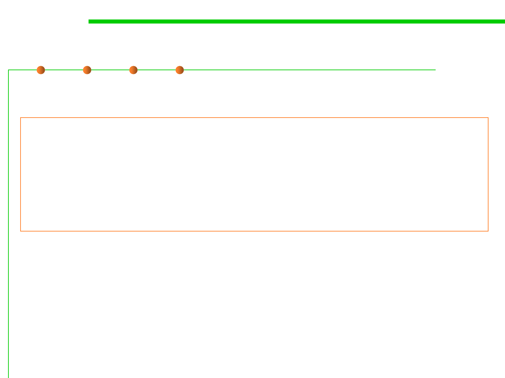

Variance in generics
5.2 Construction for Reuse
▪ Contravariant in generics:
– List<Animal> is a subtype of List<? super Cat>
List<? super Cat> animals = new ArrayList<Animal>();
animals.add(new Cat());
animals.add(new WhiteCat ());
animals.add(new Animal()); //compile error
animals.add(new Object()); //compile error
Animal animal = animals.get(0); //compile error
Object o = animals.get(1); //succeed, but it is meaningless.
– 对于List中的 T get(int pos)方法，当指定类型是“? super Cat”时, get方法的返回
类型就变成了“? super Cat”, 即返回类型可能是Cat或者Cat的基类型，compiler无法
确定具体类型，因此拒绝调用任何返回类型为T的方法(除非是读取为Object类)
– 但调用类似add(E e)的方法则安全, 传入Cat及其子类(WhiteCat)是安全的, 因为compiler
知道这个List包含的是Cat或Cat的基类对象。
– 因此,Java此时禁止了List中所有具有泛型返回类型的方法,如:get()